← 返回阅读库 · 原论文目录
论文讲解阅读文档 · 表征学习 · v175
Progressive Stage-wise Learning for Unsupervised Feature Representation Enhancement
视频时长 00:07:38；讲解文字 3,425 字符；提取讲解画面 16 张。按视频原顺序阅读，每段文字保留时间戳。
文字来自整段视频的自动语音转写，按自然停顿分段，并与 PPT / 论文页面 / 演示画面对齐。未将讲解压缩为摘要；术语、数字和口述公式请结合画面及原论文核对。 阅读稿已校正规范部分明确术语误识别；原始逐字稿和每处修改记录另行保留。
讲解画面为源视频截图（640×360），不是可编辑 PPT 文件。全片按每秒 2 帧扫描内容变化，逐步展开页保留；连续动画保留代表画面。清晰度受源视频限制。
下载完整资料包 · 含离线 HTML、PDF、Word、全部 PPT 画面和字幕。
原论文与材料
Progressive Stage-wise Learning for Unsupervised Feature Representation Enhancement · 下载完整 PDF（10 页）
按时间阅读
00:00:00–00:00:23 · 画面 001
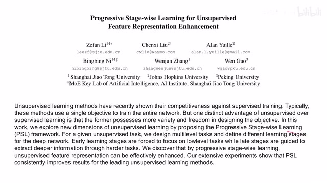
00:00:00–00:00:23 · 画面 001大家好,今天我们来快速说一篇论文 Progressive Stage-Wise Learning for Unsupervised Feature Representation Enhancement，这篇论文你可以看到它是通过 Progressive Learning 的方法，把我们原来的 Self-Supervised Learning 的问题，通过先简单后困难，先训练网络底层再训练网络高层的这样一个训练的方案，来提升 Representation Learning 的结果
00:00:23–00:00:39 · 画面 002
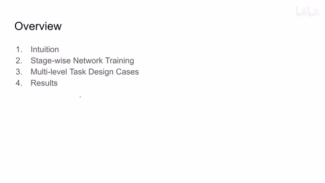
00:00:23–00:00:39 · 画面 002那么在今天的视频中，我们首先介绍了它的 Intuition，然后是作者的主要设计 Stage-Wise Network Learning，随后是作者挑选了几个 Multi-Level Task 是跟 Stage-Wise Learning 相对应的，那么最后是作者汇报的一些结果。首先来看到 Intuition 这里，作者的核心的思想叫做 Progressive Stage-Wise Learning，它的意思就是我首先训练网络的低层，再训练网络的高层，不是直接的一个端到端的学习
00:00:39–00:01:48 · 画面 003
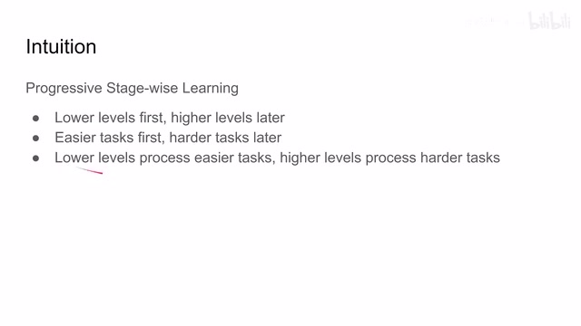
00:00:39–00:01:48 · 画面 003而且训练在网络低层的同时呢，我是跳过这些高层的，那么这样梯度的传递呢，其实是从网络的中间把梯度传递到网络的开始，那梯度传递的路线更短更容易学习，那么这个呢是第一个要素。那么随后呢是这个 easy task first，那也就是说呢，我要先学习一些相对简单的任务，比如说你在做 data augmentation 的时候呢，先做弱一点的 data augmentation，然后呢随着我训练网络的这个层次的增加，然后呢我再去训练更困难的任务而且最重要的是这两点，它们是相辅相成相互结合的，也就是说我在训练 low level 的网络的时候，我用一些 easier 的 task，我在训练 high level 的网络的时候，我用一些 hard task，这样一来就一定程度上规制了我们的网络，使得它的 lower level 和 higher level 分别处理不同层次的任务。下面我们来看作者的核心贡献 Progressive stage-wise learning
00:01:48–00:03:48 · 画面 004
00:01:48–00:03:48 · 画面 004那这里呢我们看到，假如说呢我们有一个 resnet50，那么它呢是一个一个 block 接着另一个 block 嘛，我从第一个 block 一直到第五个 block，那么传统的这个 N2N 的这个训练的方法呢，就是我一张图像进来，一个一个 block 的过嘛，过到最后加上我们这个特定任务的这个 head，计算一个 loss，然后这个 loss 呢再通过这个一层一层的这个 block 然后再给它传递回去，这个呢是最简单的这个 N2N 的这个训练的方法当然这里红色黑色标反了做图不太注意，那么这里本文提出的 stage-wise learning，可以看到它的按照图示其实非常简单，在第一个 stage 我们只训练 B1 到 B3，也就是说我在 B3 之后直接加上一个下游任务的 head，然后计算一个 loss，这里我们不训练 B4 和 B5，这样它的 BP 的路径更短
按照作者的说法，这里更容易训练，像这个时候的网络也不是很深，所以作者也不会为难他，这个时候的任务是一些简单的任务，就是专门给这些 low level 的这些网络设计的。那么当第一个 stage 训练结束，他们来到第二个 stage，这个时候我们把 B1 就可以给它封住不动了那么在这个 stage，我们就主要关心 B2 到 B4 这三个 block，那么同样的也是我们在 B4 后面加上一个我们的任务的用的 head，然后再算一个 loss，我们的 loss 是从这里直接传递到 B2 的，那么 B1 因为我们已经训练好了就不再对它进行训练了，所以你可以看到这里并没有红色的 gradient，并没有梯度往前传，那么这个时候随着我们的网络的加深，我们可以给我们的网络上稍微困难一点的任务
这个呢是 L2 那么如果当 stage2 训练完了之后呢我们就可以把 B1 和 B2 都锁住那这个时候呢就关心一下 B3 到 B5 这样一个过程那么这个时候呢我们加上这个 head 就可以训练我们最困难的这个任务然后呢就只训练最后的三层 block 让他们呢去处理最困难的任务这个呢就是本文的这个 progressive learning 的思想
00:03:48–00:03:53 · 画面 005
00:03:48–00:03:53 · 画面 00500:03:53–00:03:54 · 画面 006
00:03:53–00:03:54 · 画面 00600:03:54–00:04:22 · 画面 007
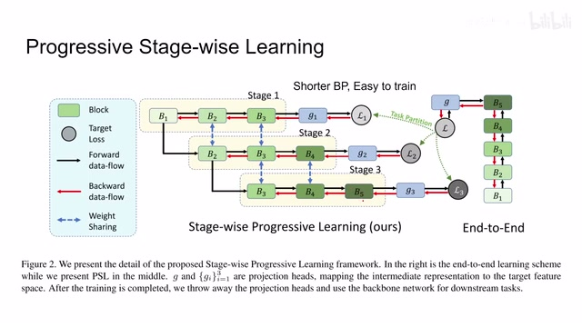
00:03:54–00:04:22 · 画面 007那么最后呢当我们所有的训练都完成了之后呢我们就有了 B1 到 B5 中间的这个 G1 到 G3 呢就可以弃之不用了那么这个时候呢我们注意到一个很重要的细节啊虽然它是 progressive learning 但是它每次训练的时候呢这个不同 stage 之间训练的 block 它是有这个交叠的它也不是说完全没有联系啊只是一个实践上的技巧那么关于训练的问题呢其实已经介绍完了下面呢我们就要看作者应该怎么样设计这三个不同难度的任务那这里呢作者帮我们测试了三种情况第一种的情况呢是这个做 puzzle 解一个拼图的问题那第二种呢是这个 rotation 我给这个图像加不同程度的旋转那么第三个呢是这个 contrast learning 那我们一样来看
00:04:22–00:04:23 · 画面 008
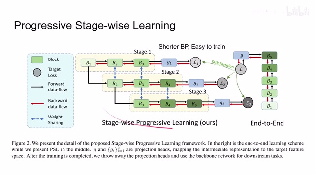
00:04:22–00:04:23 · 画面 00800:04:23–00:04:29 · 画面 009
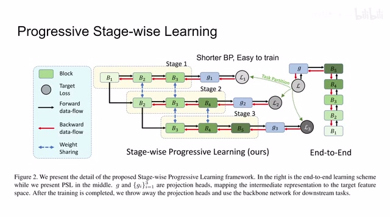
00:04:23–00:04:29 · 画面 00900:04:29–00:06:19 · 画面 010
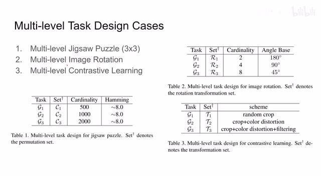
00:04:29–00:06:19 · 画面 010在这个 Jigsaw Puzzle 里面作者使用的是 3x3 的这个拼图也就是把我们的拼图打成这样的 9 块然后交换这个 9 块的顺序让我们的网络去预测正确的顺序是什么这里因为即便是只有 9 块它们的排列组合的顺序实在也是太多了所以这里作者做了一个约束那么在最简单的这个认为的情况下呢我们只有 500 种这个排列的组合那么随着难度的增加呢我们上到了 1000 种 2000 种这样子呢我们就把这个拼图难度的这个区别给它体现出来了同时呢也不至于太难而且呢我们保证在这些这个情境中呢这个每个拼图块的汉明距离呢在 8 左右啊这个呢是作者的这个 multilevel 的这个 jigsaw puzzle 那么再往下呢是这个 image rotation
那你可以看到呢在最简单任务时候呢我们只做 180 度的旋转啊要么就是正常的图像要么就是翻转 180 度的那么随着难度的增加呢我们会有 90 度的旋转和 45 度的旋转那这样子呢也把难度的提度给它体现出来了那最后呢是这个 contrastive learningcontrastive learning 呢这里呢我们主要是使用了像 SimCLR 还有 moco 他们呢就是两个 branch 然后每一个 branch 做不同的这个图像增强的这样一个方式来的所以这里的任务可以看到在最简单任务里面我们的图像增强只包括 random crop 就是随机的切一块下来那么随着难度的增加我们开始加入 color distortion 还有 filtering 你可以看到它的 data augmentation 的程度逐渐增加的那么以上就是作者选择三种任务然后每个任务有三个难度梯度用来验证本文方法的有效性可以说是具有一定的泛化性能
00:06:19–00:06:20 · 画面 011
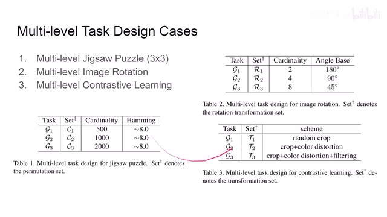
00:06:19–00:06:20 · 画面 01100:06:20–00:06:28 · 画面 012
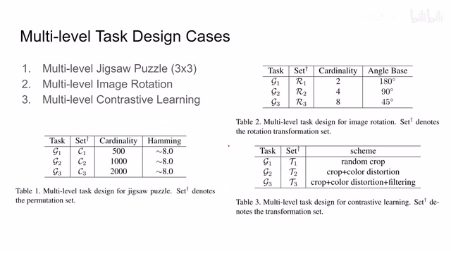
00:06:20–00:06:28 · 画面 01200:06:28–00:06:31 · 画面 013
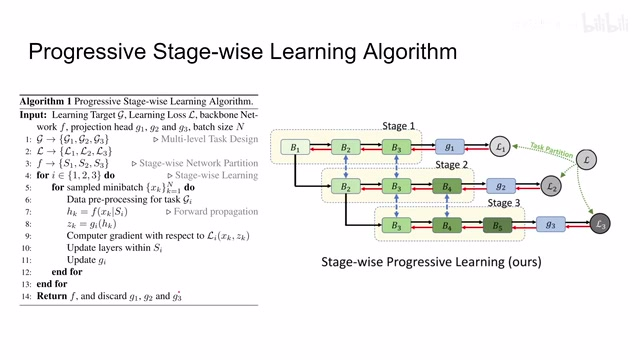
00:06:28–00:06:31 · 画面 013下面我们来看到作者汇报的一些结果首先第一个是 ImageNet 上面的 Linear Classification 还有 Semi-supervised learning 那么你可以看到相对于传统的 Jigsaw Rotation 还有 SimCLR 包括 MoCo 我们加上 PSL 就本文提出了 Progressive stage-wise learning 它的性能都有提升而且越是弱的这种东西它的提升就越强
00:06:31–00:07:02 · 画面 014
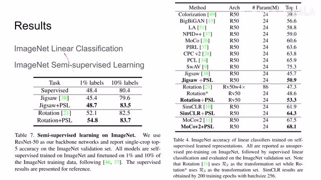
00:06:31–00:07:02 · 画面 014那么相同的模式呢我们在这个 Semi-Supervised 的任务上呢也可以看到因为这个准确率本来就比较高了嘛再往上提呢也是比较困难的那么此外呢作者还汇报 Transfer Learning 像这个 Object Detection 这里的一些提升还有和 Supervised 的方法的一个对比还有包括这个 Aiming Calculation 在其他的数据结账的表现那这里呢一个参考
00:07:02–00:07:38 · 画面 015
00:07:02–00:07:38 · 画面 015不过这里不太知道他们是因为没有时间去做 contrast learning,还是做出来效果不好,这里并没有那两个 SimCLR 和 MoCo 的结果。此外,作者还对网络结构中每层的作用进行了一个简单的讨论,感兴趣的朋友非常推荐你去观看原文。好的,以上就是我对这篇论文的一个简单的分析,感谢您的收看,再见。
00:07:38–00:07:38 · 画面 016
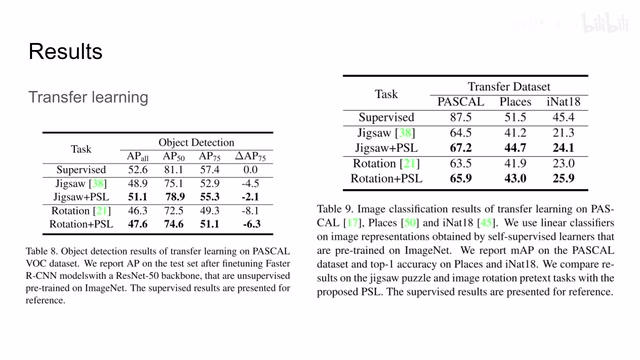
00:07:38–00:07:38 · 画面 016转写与来源说明 · 0 个自动复核提示
保留 18 个原始语音片段，0 个片段触发自动复核提示。提示仅用于定位可能的术语、重复或识别问题，不等于已确认错误。
讲解画面为源视频截图（640×360），不是可编辑 PPT 文件。全片按每秒 2 帧扫描内容变化，逐步展开页保留；连续动画保留代表画面。清晰度受源视频限制。
原视频：paper/合集_2026-10-16_表征学习/[论文简析]Progressive Stage-wise Learning for Unsupervised Feature.. [2106.05554].mp4
SHA-256：3d9f802242e136b9dcc63d01fc5dda417af57f24b6743a8b26a40bf3b465970e
全文按视频语音与画面制作。原论文可从上方链接下载；完整资料包保留全文、原始逐字稿、字幕和校对记录。